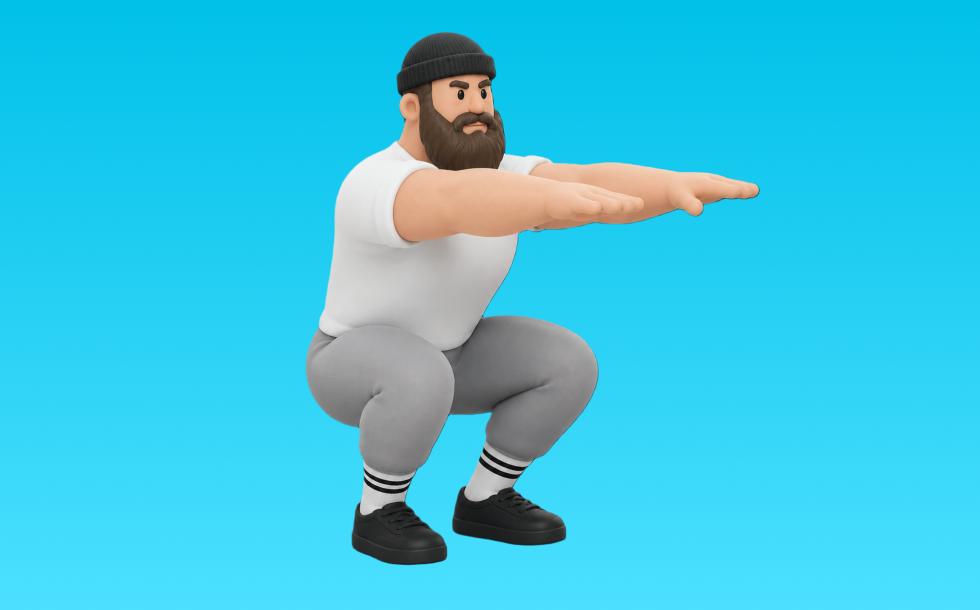

スクワット

スクワットとは、自重を使って「しゃがんで立つ」動作で脚（大腿四頭筋、臀筋）＋体幹を鍛える種目です。器具なしで手軽にでき、フォームを整えやすいのが特徴で、背すじを保ってしゃがみ、足で床を押して立ち上がる動作を繰り返します。下半身の筋力・筋量アップや基礎体力向上が期待できます。
- 対象部位
- 脚
- 器具
- 自重
- 記録形式
- 回数
- 別名
- 自重スクワット / エアスクワット / air squat / bodyweight squat
YouTube動画
-
【自宅筋トレ】なかやまきんに君の正しいスクワットを学ぼう。
-
【トップトレーナーが教えるロジカル筋トレ】これが正解！「スクワット」の正しいやり方を徹底解説
-
【筋トレ悪いフォーム解説】スクワットで怪我をしないために、ヒンジ動作を習得しよう！
-
スクワットの効果的なやり方｜ポイントを解説
-
【ボディビル日本一が完全解説】脚トレには絶対欠かせないキングオブエクササイズ!! スクワットの教科書
-
【有料級】スクワット迷子は全員観てください。世界３位の牛山選手にめちゃくちゃわかりやすいコツを教えてもらいました！パワーチューブコラボ
-
【永久保存版】基礎から徹底解説！脚トレの王様「スクワットの教科書」
-
【スクワット】2022年版！最速でわかる怪我しない正しいフォームを身につける方法！
-
【解説】正しいハイバー・ローバースクワットのやり方【筋トレ】
-
【初心者向け】正しいローバースクワットのやり方と怪我を防ぐフォーム
-
【初心者でも効果抜群】7秒スクワットで、全身の70%を占める脚・お尻の筋肉を鍛えれば全身が変わる！
-
バーベルスクワットのやり方｜正しいフォームを解説
-
スクワットの正しいやり方をプロのトレーナーが徹底解説【初心者でも安心】
-
スクワットのやり方をゆっくり解説！トレーニング超初心者向け
-
【初心者】バーベルスクワットの正しいやり方【フォーム解説】
-
【スクワット】そのフォーム間違ってます！世界チャンプが教える正しい筋トレ
-
【筋トレ】1日3分！膝の痛み予防に効果的なスクワット
-
【脚痩せ】スクワットの正しいやり方。ダイエット効果を上げるフォームを徹底解説
-
スクワットで多くの人が勘違いしてしまっている絶対にやってはいけないやり方とは【脚トレ】
-
自宅で簡単にできる人気の筋トレ！「スクワット」の正しいやり方【リングフィット攻略】
-
【初心者OK】毎日2分！脚やせ＆美尻に効く簡単スクワット
-
【初心者は絶対に見るべき】スクワットでやりがちな10個の大間違い
-
【ワイドスクワット】正しいやり方と内転筋に効かせるポイントを解説！
-
【筋トレ】世界王者パワーリフターが教えるスクワットが有料級すぎた
-
100回なのにできちゃう魔法のスクワット…！痩せたいなら全身の70%を占める下半身の筋肉を鍛えよう！脚・お尻からガチで変わるトレーニング
-
【最強の筋トレ】スクワットのやり方。フォーム・足幅・深さなどで効果は変わるのか？
-
【藤井と師匠実技】ボディビル界随一のハムケツ！バーベルスクワットのフォームとコツ 【新・バズーカ岡田チャンネル】 #バズーカ岡田
YouTubeショート
-
スクワットの正しいやり方#shorts
-
【筋トレ】山本義徳先生がスクワットを実演！
-
みなさんはスクワットどのようにされてますか？今回は持田選手がスクワットを伝授！次はどの種目の解説をやってほしいかコメントしてね！ #筋トレ #volix #トレーニング #ちょこっと惜しい
-
【逆に壊れる】スクワット初心者に多い膝を出さない間違ったフォーム #筋トレ #エクササイズ
-
スクワットの正しいフォームが最速で身につくポーズスクワット解説
-
スクワット初心者に多い腰を痛めるしゃがみ方と改善方法
-
【ブルガリアンスクワット】フォームのミスあるある。狙いたい部位を意識して、正しいフォームでやってみましょう！💪#GronG #グロング #筋トレ #フィットネス #脚トレ #ブルガリアンスクワット
-
初心者🔰にはワイドスクワットがベスト！ #筋トレ #トレーニング #50代
-
【解説】ハイバースクワットのやり方#ハイバースクワット #パワーリフティング #筋トレ #powerlifting #ベンチプレス #デッドリフト #スクワット #トレーニング #ジム #プロテイン
-
脚を細くするスクワットはこれ！お尻ともも裏鍛えれば、前ももがスッキリするよ
-
スクワットの準備方法 #初心者 #ジム #スクワット
-
正しいブルガリアンスクワット4つのポイント #筋トレ
-
こんなスクワットはやめましょう #フィットネス #筋トレ #スクワット
-
【間違った足の幅】ハイバースクワットの理想的なやり方
-
スクワットでよくある間違い3つと改善方法【筋トレ】
動作方法
- 足幅を決め、体幹を固める
- 股関節と膝を同時に曲げて下ろす
- 足裏全体で床を押して立ち上がる
動作ポイント
- 膝とつま先の向きをそろえる
- 胸を落としすぎない
- かかとを浮かせない
ワンポイントアドバイス
- ウォームアップで股関節と足首を動かす
- 高重量の日はセーフティ設定を確認する
目的別回数設定
目的や体力に応じた一般的な目安です。無理のない範囲で調整してください。
- 筋力アップ
- 1〜5回
- 筋肥大
- 6〜12回
- 持久力アップ
- 13〜20回
YouTube動画について
動画はYouTubeの公開情報をもとに表示しています。内容は投稿者によるもので、Biggrによる監修ではありません。
アプリを入手
筋トレやトレーニングの記録はBiggrにお任せください。今すぐ無料で使い始められます。